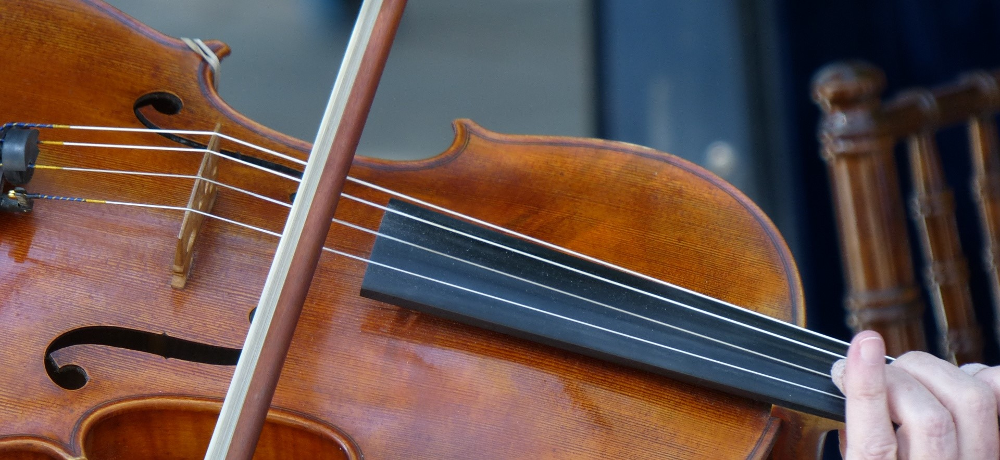

Violin
I first learned to play the violin in 2nd grade. I have played violin individually since then, and first joined an orchestra at the
beginning of middle school. The Ligon Middle School orchestra of which I was a part of played at various festivals and competitions
including the Spoleto Music Festival in 2013 and Carnegie Hall in 2014. I was also a member of the Enloe High School Chamber Orchestra
for all of high school. The violin can be a challenging and frustrating instrument, but the rewards are full of joy and substance.
